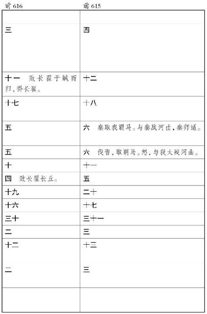

史记卷八十三
鲁仲连邹阳列传第二十三
鲁仲连 者，齐 人也。好奇伟俶傥之画策，而不肯仕宦任职，好持高节。游于赵 。
赵孝成王 时，而秦王 使白起 破赵长平 之军前后四十馀万，秦 兵遂东围邯郸 。赵王 恐，诸侯之救兵莫敢击秦 军。魏安釐王 使将军晋鄙 救赵 ，畏秦 ，止于荡阴 不进。魏王 使客将军新垣衍 间入邯郸 ，因平原君 谓赵王 曰：“秦 所为急围赵 者，前与齐湣王 争强为帝，已而复归帝；今齐 已益弱，方今唯秦 雄天下，此非必贪邯郸 ，其意欲复求为帝。赵 诚发使尊秦昭王 为帝，秦 必喜，罢兵去。”平原君 犹预未有所决。
此时鲁仲连 适游赵 ，会秦 围赵 ，闻魏 将欲令赵 尊秦 为帝，乃见平原君 曰：“事将奈何？”平原君 曰：“胜 也何敢言事！前亡四十万之众于外，今又内围邯郸 而不能去。魏王 使客将军新垣衍 令赵 帝秦 ，今其人在是。胜 也何敢言事！”鲁仲连 曰：“吾始以君为天下之贤公子也，吾乃今然后知君非天下之贤公子也。梁 客新垣衍 安在？吾请为君责而归之。”平原君 曰：“胜 请为绍介而见之于先生。”平原君 遂见新垣衍 曰：“东国有鲁仲连先生 者，今其人在此，胜 请为绍介，交之于将军。”新垣衍 曰：“吾闻鲁仲连先生 ，齐国 之高士也。衍 ，人臣也，使事有职，吾不愿见鲁仲连先生 。”平原君 曰：“胜 既已泄之矣。”新垣衍 许诺。
鲁连 见新垣衍 而无言。新垣衍 曰：“吾视居此围城之中者，皆有求于平原君 者也；今吾观先生之玉貌，非有求于平原君 者也，曷为久居此围城之中而不去？”鲁仲连 曰：“世以鲍焦 为无从颂而死者，皆非也。众人不知，则为一身。彼秦 者，弃礼义而上首功之国也，权使其士，虏使其民。彼即肆然而为帝，过而为政于天下，则连 有蹈东海 而死耳，吾不忍为之民也。所为见将军者，欲以助赵 也。”
新垣衍 曰：“先生助之将奈何？”鲁连 曰：“吾将使梁 及燕 助之，齐 、楚 则固助之矣。”新垣衍 曰：“燕 则吾请以从矣；若乃梁 者，则吾乃梁 人也，先生 恶能使梁 助之？”鲁连 曰：“梁 未睹秦 称帝之害故耳。使梁 睹秦 称帝之害，则必助赵 矣。”
新垣衍 曰：“秦 称帝之害何如？”鲁连 曰：“昔者齐威王 尝为仁义矣，率天下诸侯而朝周 。周 贫且微，诸侯莫朝，而齐 独朝之。居岁馀，周烈王 崩，齐 后往，周 怒，赴于齐 曰：‘天崩地坼，天子下席。东藩之臣因齐 后至，则斮。’齐威王 勃然怒曰：‘叱嗟，而母婢也！’卒为天下笑。故生则朝周 ，死则叱之，诚不忍其求也。彼天子固然，其无足怪。”
新垣衍 曰：“先生独不见夫仆乎？十人而从一人者，宁力不胜而智不若邪？畏之也。”鲁仲连 曰：“呜呼！梁 之比于秦 若仆邪？”新垣衍 曰：“然。”鲁仲连 曰：“吾将使秦王 烹醢梁王 。”新垣衍 怏然不悦，曰：“噫嘻，亦太甚矣，先生之言也！先生又恶能使秦王 烹醢梁王 ？”鲁仲连 曰：“固也，吾将言之。昔者九侯 、鄂侯 、文王 ，纣 之三公也。九侯 有子而好，献之于纣 ，纣 以为恶，醢九侯 。鄂侯 争之强，辩之疾，故脯鄂侯 。文王 闻之，喟然而叹，故拘之牖里 之库百日，欲令之死。曷为与人俱称王，卒就脯醢之地？齐湣王 之鲁 ，夷维子 为执策而从，谓鲁 人曰：‘子将何以待吾君？’鲁 人曰：‘吾将以十太牢待子之君。’夷维子 曰：‘子安取礼而来待吾君？彼吾君者，天子也。天子巡狩，诸侯辟舍，纳管籥，摄衽抱机，视膳于堂下，天子已食，乃退而听朝也。’鲁 人投其籥，不果纳。不得入于鲁 ，将之薛 ，假途于邹 。当是时，邹 君死，湣王 欲入吊，夷维子 谓邹 之孤曰：‘天子吊，主人必将倍殡棺，设北面于南方，然后天子南面吊也。’邹 之群臣曰：‘必若此，吾将伏剑而死。’固不敢入于邹 。邹 、鲁 之臣，生则不得事养，死则不得赙襚，然且欲行天子之礼于邹 、鲁 ，邹 、鲁 之臣不果纳。今秦 万乘之国也，梁 亦万乘之国也。俱据万乘之国，各有称王之名，睹其一战而胜，欲从而帝之，是使三晋 之大臣不如邹 、鲁 之仆妾也。且秦 无已而帝，则且变易诸侯之大臣。彼将夺其所不肖而与其所贤，夺其所憎而与其所爱。彼又将使其子女谗妾为诸侯妃姬，处梁 之宫。梁王 安得晏然而已乎？而将军又何以得故宠乎？”
于是新垣衍 起，再拜谢曰：“始以先生为庸人，吾乃今日知先生为天下之士也。吾请出，不敢复言帝秦 。”秦 将闻之，为却军五十里。适会魏公子无忌 夺晋鄙 军以救赵 ，击秦 军，秦 军遂引而去。
于是平原君 欲封鲁连 ，鲁连 辞让者三，终不肯受。平原君 乃置酒，酒酣起前，以千金为鲁连 寿。鲁连 笑曰：“所贵于天下之士者，为人排患释难解纷乱而无取也。即有取者，是商贾之事也，而连 不忍为也。”遂辞平原君 而去，终身不复见。
其后二十馀年，燕 将攻下聊城 ，聊城 人或谗之燕 ，燕 将惧诛，因保守聊城 ，不敢归。齐田单 攻聊城 岁馀，士卒多死而聊城 不下。鲁连 乃为书，约之矢以射城中，遗燕 将。书曰：
吾闻之，智者不倍时而弃利，勇士不却死而灭名，忠臣不先身而后君。今公行一朝之忿，不顾燕王 之无臣，非忠也；杀身亡聊城 ，而威不信于齐 ，非勇也；功败名灭，后世无称焉，非智也。三者世主不臣，说士不载，故智者不再计，勇士不怯死。今死生荣辱，贵贱尊卑，此时不再至，愿公详计而无与俗同。
且楚 攻齐 之南阳 ，魏 攻平陆 ，而齐 无南面之心，以为亡南阳 之害小，不如得济北 之利大，故定计审处之。今秦 人下兵，魏 不敢东面；衡秦 之势成，楚国 之形危；齐 弃南阳 ，断右壤，定济北 ，计犹且为之也。且夫齐 之必决于聊城 ，公勿再计。今楚魏 交退于齐 ，而燕 救不至。以全齐 之兵，无天下之规，与聊城 共据期年之敝，则臣见公之不能得也。且燕 国大乱，君臣失计，上下迷惑，栗腹 以十万之众五折于外，以万乘之国被围于赵 ，壤削主困，为天下僇笑。国敝而祸多，民无所归心。今公又以敝聊 之民距全齐 之兵，是墨翟 之守也。食人炊骨，士无反外之心，是孙膑 之兵也。能见于天下。虽然，为公计者，不如全车甲以报于燕 。车甲全而归燕 ，燕王 必喜；身全而归于国，士民如见父母，交游攘臂而议于世，功业可明。上辅孤主以制群臣，下养百姓以资说士，矫国更俗，功名可立也。亡意亦捐燕 弃世，东游于齐 乎？裂地定封，富比乎陶 、卫 ，世世称孤，与齐 久存，又一计也。此两计者，显名厚实也，愿公详计而审处一焉。
且吾闻之，规小节者不能成荣名，恶小耻者不能立大功。昔者管夷吾 射桓公 中其钩，篡也；遗公子纠 不能死，怯也；束缚桎梏，辱也。若此三行者，世主不臣而乡里不通。乡使管子 幽囚而不出，身死而不反于齐 ，则亦名不免为辱人贱行矣。臧获且羞与之同名矣，况世俗乎！故管子 不耻身在缧绁之中而耻天下之不治，不耻不死公子纠 而耻威之不信于诸侯，故兼三行之过而为五霸 首，名高天下而光烛邻国。曹子 为鲁 将，三战三北，而亡地五百里。乡使曹子 计不反顾，议不还踵，刎颈而死，则亦名不免为败军禽将矣。曹子 弃三北之耻，而退与鲁 君计。桓公 朝天下，会诸侯，曹子 以一剑之任，枝桓公 之心于坛坫之上，颜色不变，辞气不悖，三战之所亡一朝而复之，天下震动， 诸侯惊骇，威加吴 、越 。若此二士者，非不能成小廉而行小节也，以为杀身亡躯，绝世灭后，功名不立，非智也。故去感忿之怨，立终身之名；弃忿 之节，定累世之功。是以业与三王 争流，而名与天壤相弊也。愿公择一而行之。
燕
将见鲁连
书，泣三日，犹豫不能自决。欲归燕
，已有隙，恐诛；欲降齐
，所杀虏于齐
甚众，恐已降而后见辱。喟然叹曰：“与人刃我，宁自刃。”乃自杀。聊城
乱，田单
遂屠聊城
。归而言鲁连
，欲爵之。鲁连
逃隐于海上，曰：“吾与富贵而屈于人，宁贫贱而轻世肆志焉。”
邹阳 者，齐 人也。游于梁 ，与故吴 人庄忌夫子 、淮阴枚生 之徒交。上书而介于羊胜 、公孙诡 之间。胜 等嫉邹阳 ，恶之梁孝王 。孝王 怒，下之吏，将欲杀之。邹阳 客游，以谗见禽，恐死而负累，乃从狱中上书曰：
臣闻忠无不报，信不见疑，臣常以为然，徒虚语耳。昔者荆轲 慕燕丹 之义，白虹贯日，太子畏之；卫先生 为秦 画长平 之事，太白 蚀昴 ，而昭王 疑之。夫精变天地而信不喻两主，岂不哀哉！今臣尽忠竭诚，毕议愿知，左右不明，卒从吏讯，为世所疑，是使荆轲 、卫先生 复起，而燕 、秦 不悟也。愿大王孰察之。
昔卞和 献宝，楚王 刖之；李斯 竭忠，胡亥 极刑。是以箕子 佯狂，接舆 避世，恐遭此患也。愿大王孰察卞和 、李斯 之意，而后楚王 、胡亥 之听，无使臣为箕子 、接舆 所笑。臣闻比干 剖心，子胥 鸱夷，臣始不信，乃今知之。愿大王孰察，少加怜焉。
谚曰：“有白头如新，倾盖如故。”何则？知与不知也。故昔樊於期
逃秦
之燕
，藉荆轲
首以奉丹
之事；王奢
去齐
之魏
，临城自刭以却齐
而存魏
。夫王奢
、樊於期
非新于齐
、秦
而故于燕
、魏
也，所以去二国死两君者，行合于志而慕义无穷也。是以苏秦
不信于天下，而为燕尾生
；白圭
战亡六城，为魏
取中山
。何则？诚有以相知也。苏秦
相燕
，燕
人恶之于王，王按剑而怒，食以
 ；白圭
显于中山
，中山
人恶之魏文侯
，文侯
投之以夜光之璧。何则？两主二臣，剖心坼肝相信，岂移于浮辞哉！
；白圭
显于中山
，中山
人恶之魏文侯
，文侯
投之以夜光之璧。何则？两主二臣，剖心坼肝相信，岂移于浮辞哉！
故女无美恶，入宫见妒；士无贤不肖，入朝见嫉。昔者司马喜 髌脚于宋 ，卒相中山 ；范睢 摺胁折齿于魏 ，卒为应侯 。此二人者，皆信必然之画，捐朋党之私，挟孤独之位，故不能自免于嫉妒之人也。是以申徒狄 自沉于河 ，徐衍 负石入海。不容于世，义不苟取，比周于朝，以 移主上之心。故百里奚 乞食于路，缪公 委之以政；宁戚 饭牛车下，而桓公 任之以国。此二人者，岂借宦于朝，假誉于左右，然后二主用之哉？感于心，合于行，亲于胶漆，昆弟不能离，岂惑于众口哉？故偏听生奸，独任成乱。昔者鲁 听季孙 之说而逐孔子 ，宋 信子罕 之计而囚墨翟 。夫以孔 、墨 之辩，不能自免于谗谀，而二国以危。何则？众口铄金，积毁销骨也。是以秦 用戎 人由余 而霸中国，齐 用越 人蒙 而强威 、宣 。此二国，岂拘于俗，牵于世，系阿偏之辞哉？公听并观，垂名当世。故意合则胡越为昆弟，由余 、越 人蒙 是矣；不合，则骨肉出逐不收，朱 、象 、管 、蔡 是矣。今人主诚能用齐 、秦 之义，后宋 、鲁 之听，则五伯 不足称，三王 易为也。
是以圣王觉寤，捐子之 之心，而能不说于田常 之贤；封比干 之后，修孕妇之墓，故功业复就于天下。何则？欲善无厌也。夫晋文公 亲其仇，强霸诸侯；齐桓公 用其仇，而一匡天下。何则，慈仁殷勤，诚加于心，不可以虚辞借也。
至夫秦 用商鞅 之法，东弱韩 、魏 ，兵强天下，而卒车裂之；越 用大夫种 之谋，禽劲吴 ，霸中国，而卒诛其身。是以孙叔敖 三去相而不悔，於陵子仲 辞三公为人灌园。今人主诚能去骄傲之心，怀可报之意，披心腹，见情素，堕肝胆，施德厚，终与之穷达，无爱于士，则桀 之狗可使吠尧 ，而蹠 之客可使刺由 ；况因万乘之权，假圣王之资乎？然则荆轲 之湛七族，要离 之烧妻子，岂足道哉！
臣闻明月之珠，夜光之璧，以暗投人于道路，人无不按剑相眄者。何则？无因而至前也。蟠木根柢，轮囷离诡，而为万乘器者。何则？以左右先为之容也。故无因至前，虽出随侯 之珠，夜光之璧，犹结怨而不见德。故有人先谈，则以枯木朽株树功而不忘。今夫天下布衣穷居之士，身在贫贱，虽蒙尧 、舜 之术，挟伊 、管 之辩，怀龙逄 、比干 之意，欲尽忠当世之君，而素无根柢之容，虽竭精思，欲开忠信，辅人主之治，则人主必有按剑相眄之迹，是使布衣不得为枯木朽株之资也。
是以圣王制世御俗，独化于陶钧之上，而不牵于卑乱之语，不夺于众多之口。故秦皇帝 任中庶子蒙嘉 之言，以信荆轲 之说，而匕首窃发；周文王 猎泾 、渭 ，载吕尚 而归，以王天下。故秦 信左右而杀，周 用乌集而王。何则？以其能越挛拘之语，驰域外之议，独观于昭旷之道也。
今人主沉于谄谀之辞，牵于帷裳之制，使不羁之士与牛骥同皂， 此鲍焦 所以忿于世而不留富贵之乐也。
臣闻盛饰入朝者不以利污义，砥厉名号者不以欲伤行，故县名胜母 而曾子 不入，邑号朝歌 而墨子 回车。今欲使天下寥廓之士，摄于威重之权，主于位势之贵，故回面污行以事谄谀之人而求亲近于左右，则士伏死堀穴岩薮之中耳，安肯有尽忠信而趋阙下者哉！
书奏梁孝王
，孝王
使人出之，卒为上客。